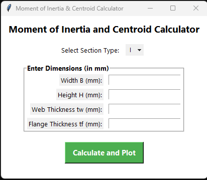
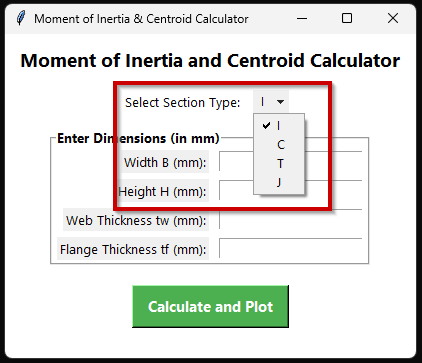
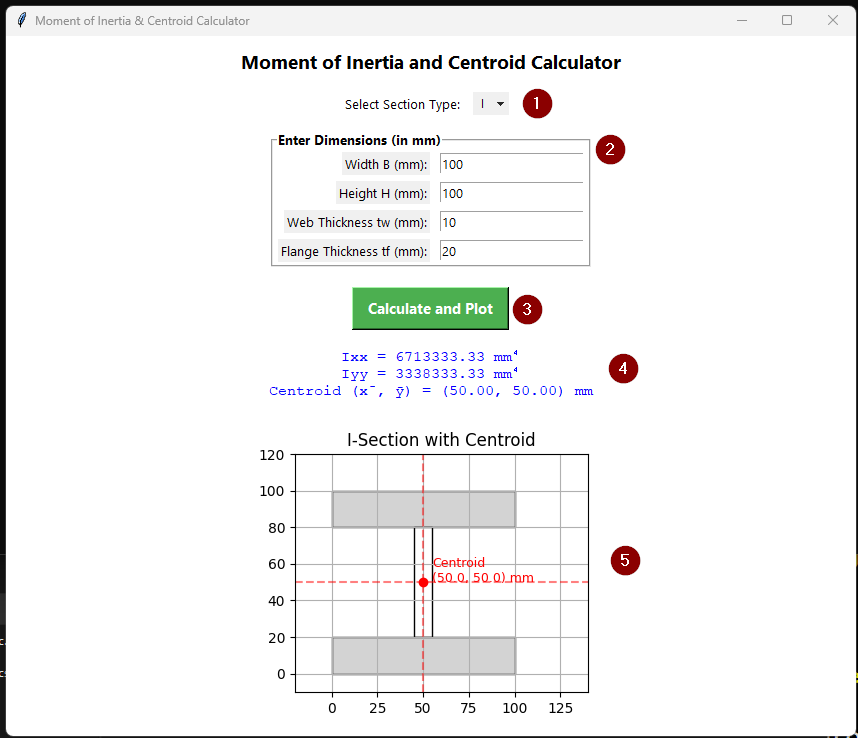

About
This tool is used in structural analysis where moment of inertia (MOI) is required to be computed for various cross-sections.
Download
Click the link to download the file.
Features of the app:
- Select the type of cross-section.
- Enter user-defined dimensions.
- Displays MOI & centroid of the cross-section.
- Displays the cross-section graphically with above details.
Features to be added in the future:
- Adding more cross-sections.
- Adding sample dimensions.
- Displays more details and information.
- Export of information to file and image.
Screenshots
Figure 1: GUI (Right click and open image in new tab)
Figure 2: Available cross-sections
Figure 3: Follow the steps in the order shown
Steps to follow (Refer Figure 3):
- Select the desired cross-section from the dropdown menu.
- Enter the dimensions.
- Click the button.
- The MOI and other details are displayed.
- A graphical layout of the cross-section is displayed.